STOP 01
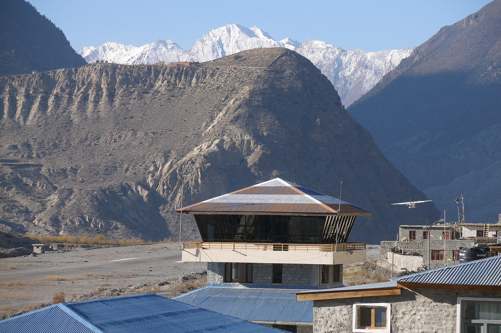
Jomsom
District headquarters and airstrip in the shadow of Nilgiri. Morning flights only — the noon wind closes the valley. Jeeps and the riverside trail continue north.
Mustang · Nepal · The last village before the Forbidden Kingdom
A medieval village of mud-brick alleys and prayer wheels, standing guard where the Kali Gandaki river opens the only road to the walled kingdom of Lo — for six hundred years, and counting.
Where two rivers
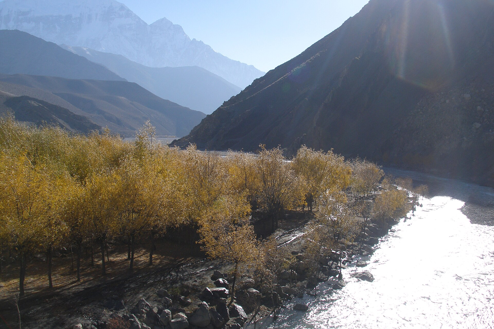
meet and the wind is born, a medieval village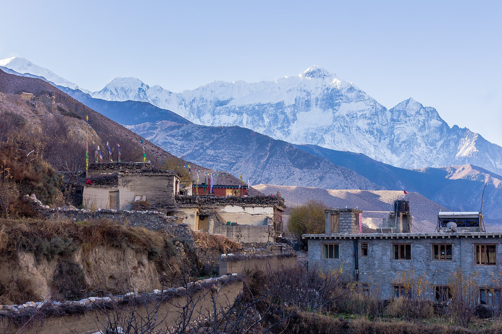
still guards the road to the Forbidden Kingdom.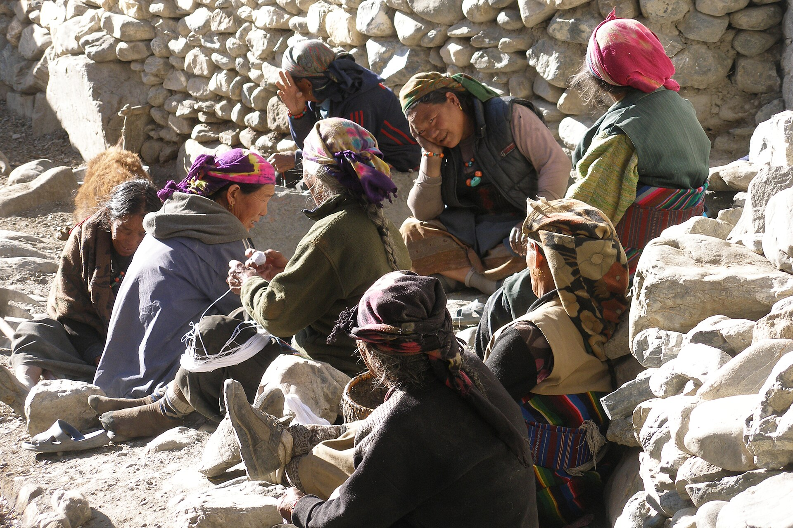
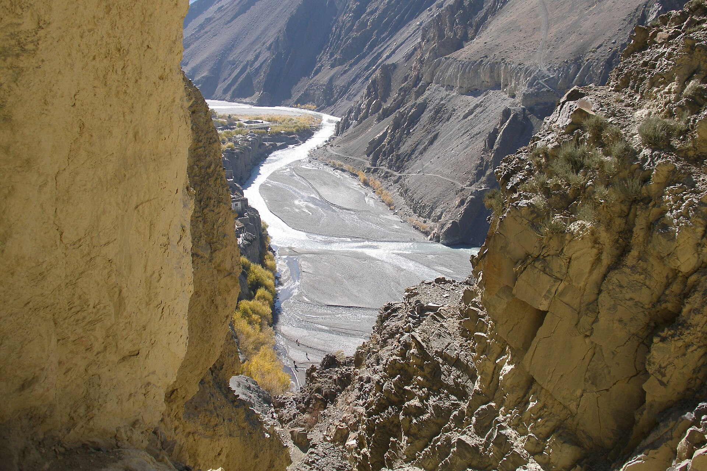
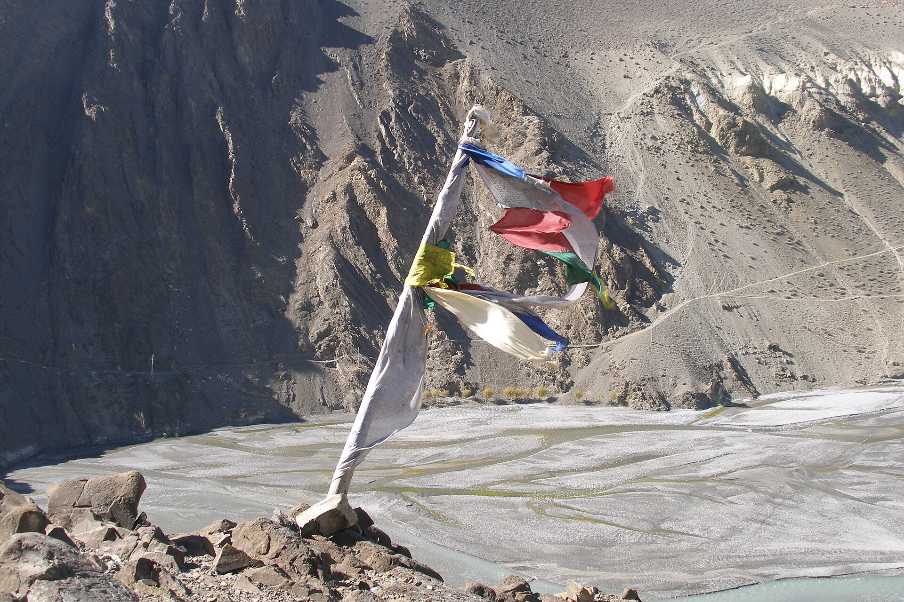
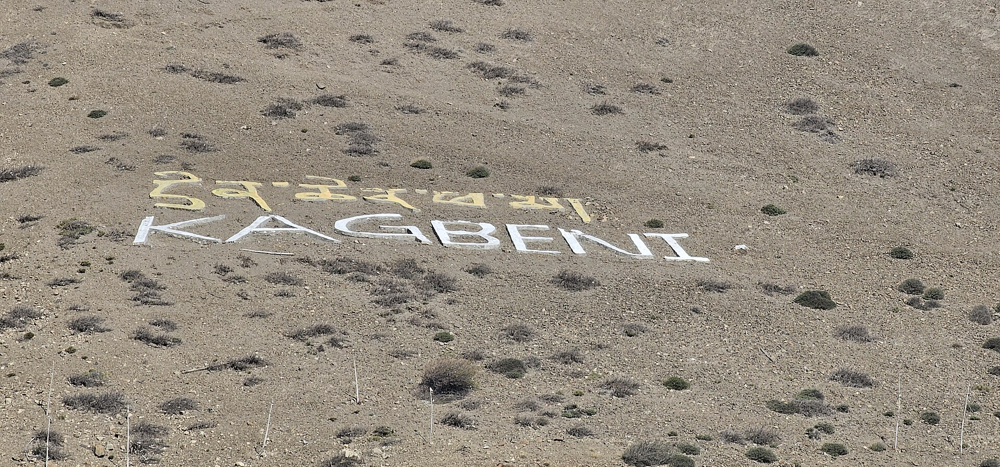
For centuries Kagbeni sat at the knot of the Himalayan salt trade — the crossing point between Manang, Dolpo, Upper Mustang and the mid-hills. Caravans of salt, wool and grain rested inside its fortified alleys before braving the passes.
The village grew inward, like a fortress: houses joined into walls, lanes narrowed to tunnels, and the great chörten gate still funnels every traveler through its painted arch.
Ka for Kali, Ga for Gandaki, Beni — the meeting of rivers. Kagbeni is named for the exact point where the Kag Khola pours into the Kali Gandaki, one of the deepest river corridors on Earth, cut between the 8,000-metre giants of Annapurna and Dhaulagiri.
Every day, like clockwork, warm air rises from the lowlands and is squeezed through the gorge — making this valley famously the windiest place in Nepal. Mornings are still and golden; afternoons roar.
Locals plan by it. Trekkers learn to. Walk early, then watch the dust ghosts race up the riverbed from a teahouse window.
Above the rooftops, the village spells its own name in whitewashed stones. Beyond that hillside the trail crosses a line on the map: the restricted kingdom of Upper Mustang, closed to outsiders until 1992 and still entered only through this checkpoint.
Kagbeni is not on the way to the Forbidden Kingdom. Kagbeni is the door.
Scroll or swipe — the road moves sideways

District headquarters and airstrip in the shadow of Nilgiri. Morning flights only — the noon wind closes the valley. Jeeps and the riverside trail continue north.
The gate itself. Medieval tunnels, the 600-year-old Red Monastery, apple orchards, and the last teahouses before the restricted line. Sleep here; walk the alleys at dusk.
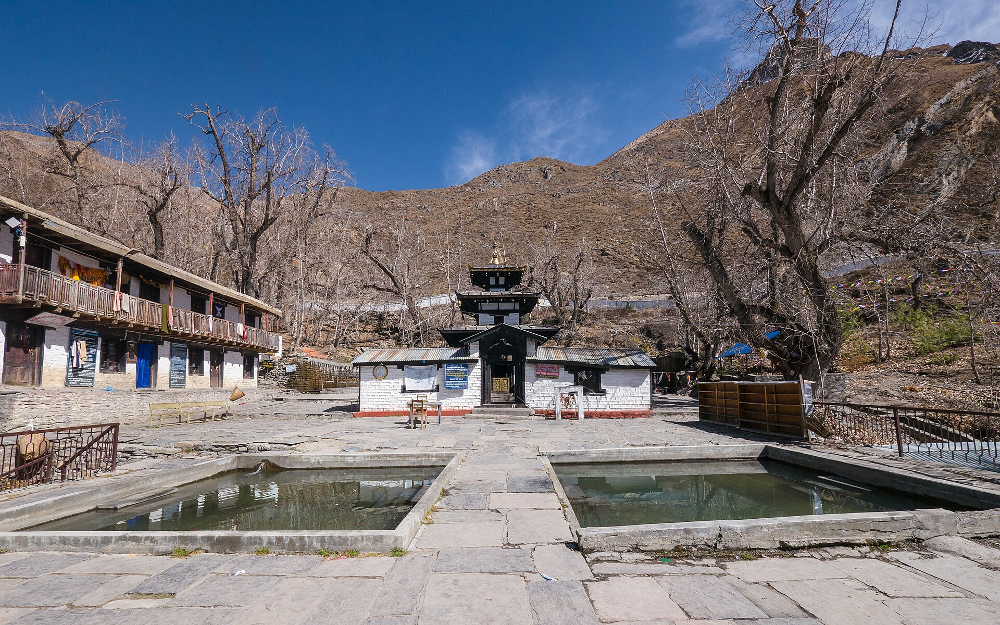
One of the holiest sites in the Himalaya for Hindus and Buddhists alike — 108 water spouts, an eternal flame, and pilgrims from across the subcontinent. No special permit needed.
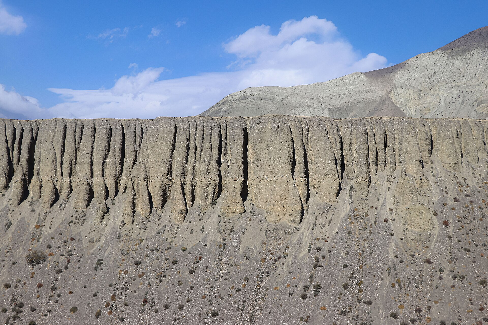
North of Kagbeni's ACAP post the canyon turns to sculpted stone — Chhusang, Chele, and cliff caves older than memory. From here on, the Upper Mustang permit rides in your pocket.
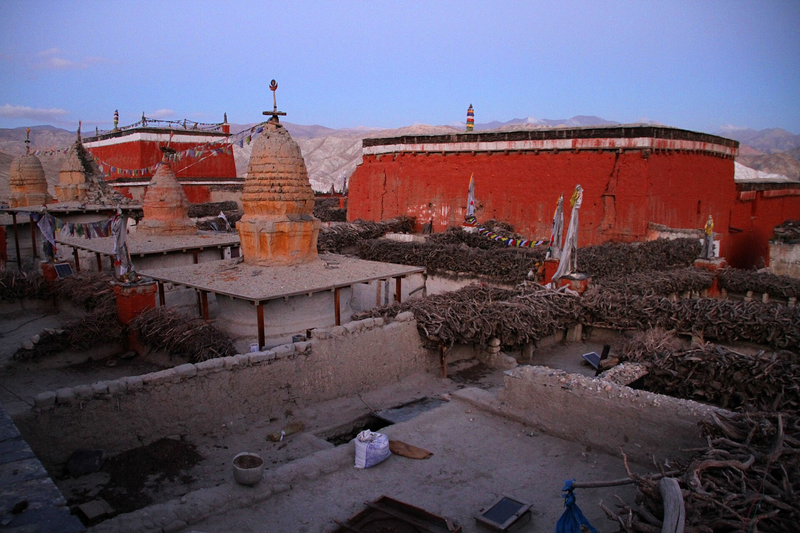
The walled capital of the old Kingdom of Lo — palaces, crimson gompas, and the masked dances of the Tiji festival each spring. The road that starts in Kagbeni ends here.
Kagbeni is holy twice over — a Buddhist monastery town on the Tibetan frontier, and one of Hinduism's great sites for honouring the ancestors.
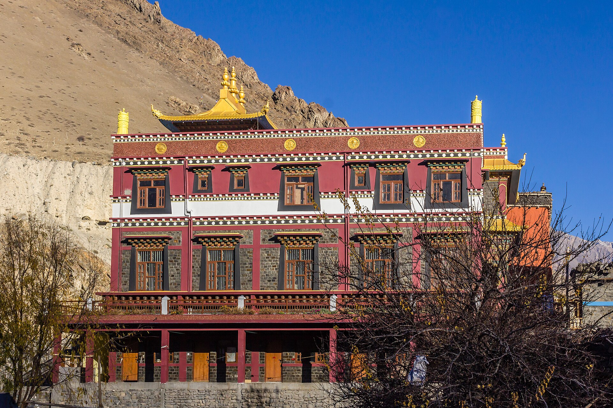
Founded in 1429 by the Sakya scholar Tenpai Gyaltsen, its leaning earthen walls have schooled monks for six hundred years. Morning prayers are open to respectful visitors.
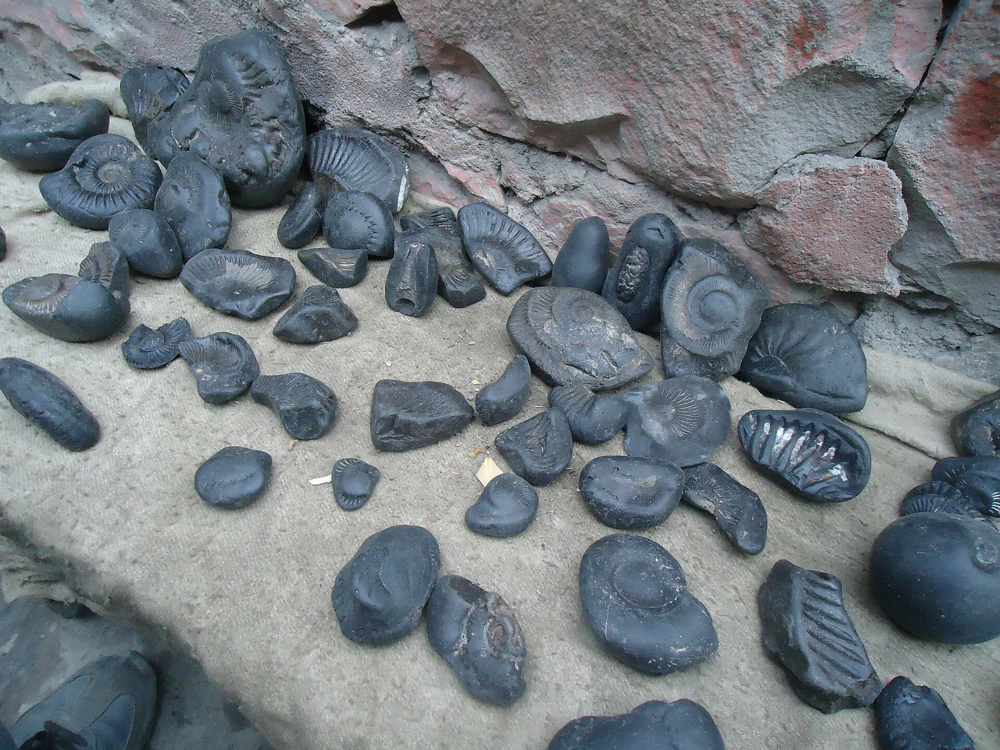
The Kali Gandaki's black ammonites — sea creatures older than the Himalaya itself — are revered as embodiments of Lord Vishnu and found nowhere else on Earth.
At the river confluence, Hindu families perform shraddha — rites that free the souls of ancestors. Pilgrims bound for Muktinath stop here first, by the Shaligram Mata temple.
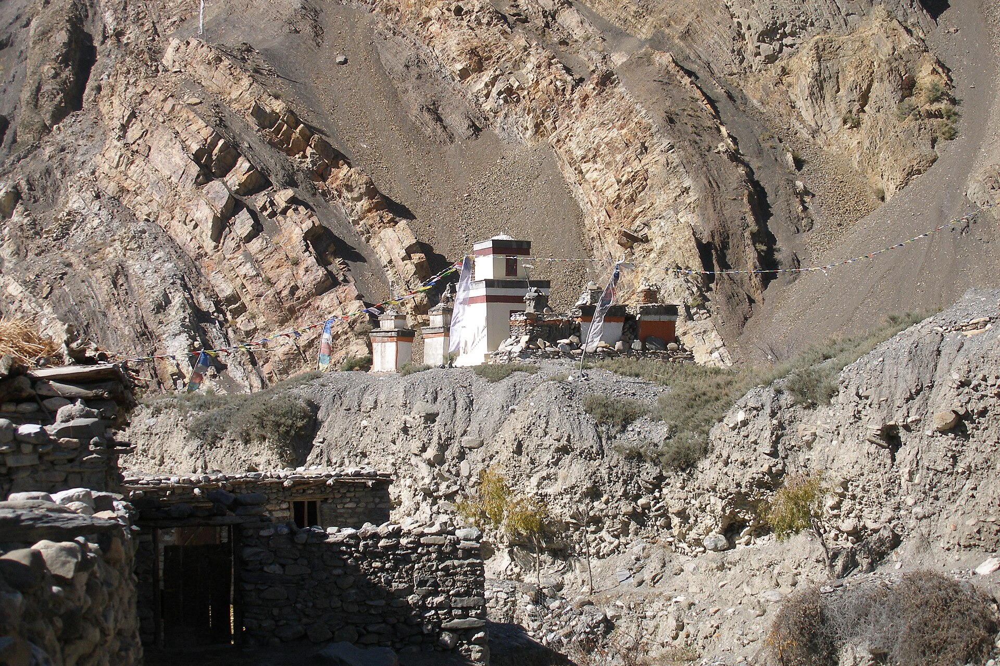
An hour east above the Jhong river lie the ruins of an entire earlier settlement — 34 houses on a terrace, part of Mustang's vast, half-explored cave civilisation.
Kagbeni sits in the Himalayan rain shadow — so its calendar breaks the usual Nepal rules. Pick your season.
Apple orchards blossom against bare cliffs, passes reopen, and the Tiji festival fills Lo Manthang with masked dances in May. Days are warm, mornings calm, trails busy but never crowded.
While the rest of Nepal pours, Mustang stays largely dry — this is one of the few Himalayan treks that works in monsoon. Green barley fields, dramatic clouds, and the quietest trails of the year. Flights can be disrupted; roads get muddy patches.
Crystal air, harvest gold in the fields, and the sharpest mountain views of the year. The Yartung horse festival gallops through Muktinath in early autumn. Book lodges ahead in October.
Bitter nights, luminous days, empty trails. Many families migrate to lower towns and some lodges close, but the village under snow-dusted cliffs is unforgettable. Check road and flight conditions closely.
$50 / day
Upper Mustang's restricted-area permit switched in late 2025 from a flat US$500 / 10 days to a flexible per-day rate — a 5-day trip now costs $250 in permits, not $500.
The village sits in Lower Mustang — no restricted permit needed. Come up from Jomsom with just the standard Annapurna paperwork and stay as long as you like.
ACAPRAP — Upper MustangLicensed guide
Family-run lodges cluster inside the old town and along the river — warm dining rooms, apple pie, and Marpha-apple everything. Try local buckwheat bread, thukpa and dried-apple snacks; and yes, the famous yak-themed diner "YacDonald's" is real, beloved, and photographed daily.
The gate is open
Morning light, a stamped permit, prayer flags snapping overhead — and six hundred years of travelers who stood exactly where you're standing.
Plan your journey{kind=link}
{kind=link}
{kind=link}
{kind=link}
{kind=link}
{kind=link}
{kind=link}
{kind=link}
{kind=link}
{kind=link}
{kind=link}
{kind=link}
{kind=link}
{kind=link}
{kind=link}
{kind=link}